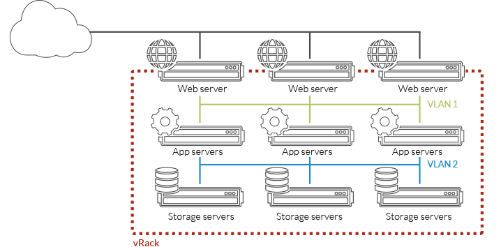
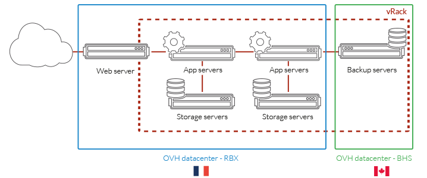

class: center, bottom, regular, title # Chmura hybrydowa # Public Cloud OVH Sławomir Kapłoński & Paweł Suder 7.11.2017 --- class: center, middle, regular # OVH Krótki przegląd --- class: center, middle, regular ## OVH w liczbach ----- <div class="container"> <div class="row"> <div class="col"> <img src="images/img01.png"></img> </div> <div class="col"> <img src="images/img02.png"></img> </div> <div class="col"> <img src="images/img03.png"></img> </div> </div> <div class="row"> <div class="col"> Start w 1999 r. </div> <div class="col"> W Polsce od 2004 r. </div> <div class="col"> Ponad 2000 pracowników w OVH w 19 krajach We Wrocławiu ponad 70 </div> </div> </div> ----- --- class: center, middle, regular ## OVH w liczbach ----- <div class="container"> <div class="row"> <div class="col"> <img src="images/img04.png" style="heigth: 50%; width: 50%;"></img> </div> <div class="col"> <img src="images/img05.png"></img> </div> <div class="col"> <img src="images/img04.png" style="heigth: 50%; width: 50%;"></img> </div> </div> <div class="row"> <div class="col"> Ponad 1 mln klientów </div> <div class="col"> Ponad 60% klientów to profesjonaliści i resellerzy </div> <div class="col"> Klienci z blisko 140 krajów </div> </div> </div> ----- --- class: center, middle, regular ## OVH na mapie -----  ----- --- class: center, middle, regular ## Innowacje w OVH DC Roubaix <img src="images/img07.jpg" style="width: 60%"></img> Pierwsze centrum bez klimatyzacji --- class: center, middle, regular ## Innowacje w OVH Chłodzenie ----- <div class="container"> <div class="row"> <div class="col"> <img src="images/img08.jpg" style="height: 100%"></img> </div> <div class="col"> <img src="images/watercooling.jpg" style="width: 100%"></img> </div> </div> </div> ----- Zastosowane chłodzenie wodą i powietrzem Jedynie 10W zużywane jest na schłodzenie 100W serwera --- class: center, middle, regular ## Innowacje w OVH Odnawialne źródła energii ----- <img src="images/img09.jpg" style="width: 70%"></img> ----- Zainwestowaliśmy ponad 15 mln € w odnawialne źródła energii --- class: center, middle, regular ## Innowacje w OVH Własne serwery ----- <img src="images/header-production.jpg" style="width: 60%"></img> ----- OVH produkuje swoje własne serwery i dysponuje kilkoma liniami produkcyjnymi we Francji i w Kanadzie. --- class: center, middle, regular ## Innowacje w OVH DC Strasbourg ----- <img src="images/sbg1.jpg" style="width: 80%"></img> ----- Budowa DC Zastosowanie kontenerów do budowy centrum --- class: center, middle, regular # OVH w Polsce Nowe DC OVH --- class: center, middle, regular ## Nowe DC w Ożarowie Mazowieckim ----- <img src="images/C3o8QYNWIAAG2RJ.jpg" style="width: 35%"></img> ----- _Octave: DC WAW1 in Warsaw: Room 0 for the routing gears._ <!-- <div class="link" url="https://twitter.com/olesovhcom/status/827039870304604160"></div> --> --- class: center, middle, regular ## Nowe DC w Ożarowie Mazowieckim ----- <img src="images/IMG_2003.JPG" style="width: 75%"></img> ----- --- class: regular # OVH w Polsce ----- <div class="center"> Produkty hostowane w Polsce </div> ----- <div class="container"> <div class="row" style="padding: 2em"> <div class="col center"> <div class="icn icn-publicCloud"></div> Public Cloud </div> <div class="col center"> <div class="icn icn-privateCloud"></div> Private Cloud </div> </div> <div class="row" style="padding: 2em"> <div class="col center"> <div class="icn icn-vps"></div> VPS </div> <div class="col center"> <div class="icn icn-dedicated"></div> Dedykowane serwery </div> </div> </div> --- class: center, middle, regular # Public Cloud --- class: regular # Public Cloud ----- Co nas wyróżnia? - zgodność z OpenStack API - OpenStack w Warszawie jest w wersji Newton - backend oparty na Ceph - instancje posiadają w pełni osiągalny publiczny adres IP - możliwość integracji usług wewnątrz OVH - sieć jest domyślnie zabezpieczona przed nadmiernym ruchem przez Anti-DDoS <!-- <div class="link" url="https://www.ovh.pl/public-cloud/instances/"></div> --> --- class: regular # Public Cloud ----- Sieć w OVH - każda z instancji posiadać może adres sieci publicznej - adres sieci publicznej ma maskę /32 - brak ruchu rozgłoszeniowego na interfejsie instancji - możliwość podłączenia wielu sieci prywatnych do instancji - prywatne sieci dostępne w różnych regionach dzięki vRack - ruch między siecią OVH a zewnetrzną jest chroniony przez Anti-DDoS --- class: center, middle, regular # vRack <img src="images/img-header-vrack.png" class="light"></img> Prywatne połączenie wszystkich infrastruktur na całym świecie --- class: center, middle, regular ## Prywatna sieć <img src="images/schema-isolation.png" class="light"></img> vRack pozwala na odizolowanie najważniejszych serwerów w ramach prywatnej sieci VLAN. Twoje dane są zabezpieczone a komunikacja między serwerami nie odbywa się za pomocą sieci publicznej. --- class: center, middle, regular ## Wiele sieci VLAN </img> Możesz wdrożyć aż do 4000 prywatnych sieci VLAN. Do serwerów dedykowanych możliwe jest doprowadzenie łącza trunk, a do instancji Public Cloud - wiele interfejsów różnych sieci prywatnych. --- class: center, middle, regular ## Infrastruktura hybrydowa <img src="images/schema-hybride.png" class="light"></img> Możliwe jest połączenie Public Cloud z serwerami dedykowanymi. --- class: center, middle, regular ## Multidatacenter </img> vRack działa między różnymi centrami danych OVH. Od Europy po Kanadę: możesz budować prywatne i redundantne infrastruktury umieszczone w kilku centrach danych. --- class: regular # vRack ----- Technologia vRack (wirtualna szafa) pozwala na podłączenie, odizolowanie i rozdzielenie usług OVH w ramach jednej lub kilku prywatnych i zabezpieczonych sieci. Dzięki unikalnym technologiom sieciowym możesz zbudować zaawansowane prywatne infrastruktury w strefie wielu centrów danych. Planowane jest uruchomienie vRouter, który pozwoli na zestawienie połączenia między własnymi zasobami a zasobami w OVH. <!-- <div class="link" url="https://www.ovh.pl/rozwiazania/vrack/"></div> --> --- class: regular # vRack Connect ----- Możliwość bezpośredniego połączenia własnego DC z zasobami w OVH. W Polsce będzie ono dostępne w wersji **Dedicated** w Warszawie przez punkty: - **Lim** - **Thinx** <!-- <div class="link" url="https://www.ovh.pl/rozwiazania/vrack-connect/"></div> --> --- class: center, middle, regular # Planowane usługi --- class: regular # Load Balancer ----- Dedykowana usługa pozwalająca na rozdzielanie ruchu sieciowego między serwerami. Na chwilę obecną IPLB nie jest dostępne w Polsce. Trwają prace nad integracją produktu OVH IPLB z OpenStack. Pozwoli to na zarządzanie load balancerem z poziomu OpenStack API. --- class: regular # Telemetria ----- Usługa pozwalająca na dostarczenie informacji o zużyciu zasobów oraz aktualnym obciążeniu. Trwają prace nad integracją obecnego systemu metryk z OpenStack. Pozwoli to na pobieranie danych z poziomu OpenStack API. --- class: center, middle, regular ## Telemetria #### Przykładowe metryki ----- <pre> $ nova list +--------------------------------------+------------------+--------+ | ID | Name | Status | +--------------------------------------+------------------+--------+ | 1e6c8de0-6ffe-422b-9729-968606f8a31b | testing_instance | ACTIVE | +--------------------------------------+------------------+--------+ </pre> <pre style="font-size: 0.45em;"> $ gnocchi resource list -c id -c type -c original_resource_id +--------------------------------------+----------------------------+-----------------------------------------------------------------------+ | id | type | original_resource_id | +--------------------------------------+----------------------------+-----------------------------------------------------------------------+ | 1e6c8de0-6ffe-422b-9729-968606f8a31b | instance | 1e6c8de0-6ffe-422b-9729-968606f8a31b | | 74101fe3-6aed-5e45-ae1e-05226c5053d6 | instance_network_interface | instance-00000001-1e6c8de0-6ffe-422b-9729-968606f8a31b-tap58d2b129-ad | | b85b3778-95ea-5b21-8f8b-48ca8477e224 | instance_disk | 1e6c8de0-6ffe-422b-9729-968606f8a31b-vda | +--------------------------------------+----------------------------+-----------------------------------------------------------------------+ </pre> <pre style="font-size: 0.4em;"> $ gnocchi metric list | grep 1e6c8de0-6ffe-422b-9729-968606f8a31b | grep cpu_util +--------------------------------------+---------------------+---------------------------------+---------+--------------------------------------+ | id | archive_policy/name | name | unit | resource_id | +--------------------------------------+---------------------+---------------------------------+---------+--------------------------------------+ | ba9359a1-0a22-4355-995b-085f6ee51089 | ovh | cpu_util | None | 1e6c8de0-6ffe-422b-9729-968606f8a31b | +--------------------------------------+---------------------+---------------------------------+---------+--------------------------------------+ </pre> --- class: center, middle, regular ## Telemetria #### Przykładowe metryki ----- <pre> $ gnocchi measures show ba9359a1-0a22-4355-995b-085f6ee51089 +---------------------------+-------------+---------------+ | timestamp | granularity | value | +---------------------------+-------------+---------------+ | 2017-10-30T20:31:20+00:00 | 1.0 | 0.7906971621 | | 2017-10-30T20:31:04+00:00 | 1.0 | 0.8331819372 | | 2017-10-30T20:30:56+00:00 | 1.0 | 0.8397322547 | | 2017-10-30T20:30:50+00:00 | 1.0 | 0.8333364261 | | 2017-10-30T20:30:34+00:00 | 1.0 | 0.8161961264 | | 2017-10-30T20:30:20+00:00 | 1.0 | 0.800532321 | | 2017-10-30T20:30:04+00:00 | 1.0 | 0.8000285929 | | 2017-10-30T20:29:50+00:00 | 1.0 | 0.8173879552 | | 2017-10-30T20:29:33+00:00 | 1.0 | 5.96562261 | | 2017-10-30T20:29:20+00:00 | 1.0 | 6.3457825867 | | 2017-10-30T20:29:04+00:00 | 1.0 | 6.7974552858 | | 2017-10-30T20:28:50+00:00 | 1.0 | 16.7978234661 | | 2017-10-30T20:28:34+00:00 | 1.0 | 39.6572404722 | +---------------------------+-------------+---------------+ </pre> --- class: center, middle, regular ## Telemetria #### Przykładowe metryki -----  ----- Grafana dostępna jest z poziomu Manager --- class: regular # Automatyzacja ----- Usługi OpenStack Aodh oraz Heat bazują na danych z metrykach i pozwalają na automatyzację zarządzania cloudem. Alarmy wyzwalane są przy określonych wartościach metryk. Określone alarmy powodują akcje, którymi mogą być dynamiczne dodawanie lub usuwanie instancji. --- class: center, middle, regular ## Automatyzacja #### Przykład użycia ----- <pre style="font-size: 0.4em"> $ openstack stack list +--------------------------------------+---------------+----------------------------------+-----------------+----------------------+--------------+ | ID | Stack Name | Project | Stack Status | Creation Time | Updated Time | +--------------------------------------+---------------+----------------------------------+-----------------+----------------------+--------------+ | 9299ada4-20e7-4682-b8ba-3f9517646472 | testing_stack | 853de3a604084184bfa18948220f309b | CREATE_COMPLETE | 2017-10-31T08:51:24Z | None | +--------------------------------------+---------------+----------------------------------+-----------------+----------------------+--------------+ </pre> <pre style="font-size: 0.4em"> $ nova list +--------------------------------------+-------------------------------------------------------+--------+------------+-------------+--------------: | ID | Name | Status | Task State | Power State | Networks : +--------------------------------------+-------------------------------------------------------+--------+------------+-------------+--------------: | 42de4c5b-be90-4971-9c06-cd7188bba928 | te-g_stack-asg-oh2uc3a6pztc-rcnrmap2iroe-nimt3jfhue7g | ACTIVE | - | Running | private=fdab:: +--------------------------------------+-------------------------------------------------------+--------+------------+-------------+--------------: </pre> <pre style="font-size: 0.4em"> $ aodh alarm list +--------------------------------------+--------------------------------------------+-------------------------------------------+-------+---------: | alarm_id | type | name | state | severity: +--------------------------------------+--------------------------------------------+-------------------------------------------+-------+---------: | f16d3bb5-babe-4b13-898e-1c20a1e91684 | gnocchi_aggregation_by_resources_threshold | testing_stack-cpu_alarm_high-tvou3zg7su5l | ok | low : | 2b2067bc-786e-4a19-964d-d0a2e918f8a0 | gnocchi_aggregation_by_resources_threshold | testing_stack-cpu_alarm_low-lwv3gpmv44x2 | alarm | low : +--------------------------------------+--------------------------------------------+-------------------------------------------+-------+---------: </pre> --- class: center, middle, regular ## Automatyzacja #### Przykład użycia ----- <pre style="font-size: 0.6em"> $ gnocchi measures aggregation \ --resource-type instance \ --query ''server_group="9299ada4-20e7-4682-b8ba-3f9517646472"'' \ --aggregation mean -m cpu_util \ --start "-5 m" --stop now \ --needed-overlap 0 --granularity 15 +---------------------------+-------------+---------------+ | timestamp | granularity | value | +---------------------------+-------------+---------------+ ........................................................... | 2017-10-31T09:11:15+00:00 | 15.0 | 0.8114249292 | | 2017-10-31T09:11:30+00:00 | 15.0 | 0.9610490475 | | 2017-10-31T09:11:45+00:00 | 15.0 | 1.3871397001 | | 2017-10-31T09:12:00+00:00 | 15.0 | 19.1047855617 | +---------------------------+-------------+---------------+ </pre> <pre style="font-size: 0.4em"> $ aodh alarm list +--------------------------------------+--------------------------------------------+-------------------------------------------+-------+----------: | alarm_id | type | name | state | severity : +--------------------------------------+--------------------------------------------+-------------------------------------------+-------+----------: | f16d3bb5-babe-4b13-898e-1c20a1e91684 | gnocchi_aggregation_by_resources_threshold | testing_stack-cpu_alarm_high-tvou3zg7su5l | ok | low : | 2b2067bc-786e-4a19-964d-d0a2e918f8a0 | gnocchi_aggregation_by_resources_threshold | testing_stack-cpu_alarm_low-lwv3gpmv44x2 | alarm | low : +--------------------------------------+--------------------------------------------+-------------------------------------------+-------+----------: </pre> --- class: center, middle, regular ## Automatyzacja #### Przykład użycia ----- <pre style="font-size: 0.6em"> $ gnocchi measures aggregation \ --resource-type instance \ --query ''server_group="9299ada4-20e7-4682-b8ba-3f9517646472"'' \ --aggregation mean -m cpu_util \ --start "-5 m" --stop now \ --needed-overlap 0 --granularity 15 +---------------------------+-------------+---------------+ | timestamp | granularity | value | +---------------------------+-------------+---------------+ ........................................................... | 2017-10-31T09:11:30+00:00 | 15.0 | 0.9610490475 | | 2017-10-31T09:11:45+00:00 | 15.0 | 1.3871397001 | | 2017-10-31T09:12:00+00:00 | 15.0 | 19.1047855617 | | 2017-10-31T09:12:15+00:00 | 15.0 | 63.525273101 | +---------------------------+-------------+---------------+ </pre> <pre style="font-size: 0.4em"> $ aodh alarm list +--------------------------------------+--------------------------------------------+-------------------------------------------+-------+----------: | alarm_id | type | name | state | severity : +--------------------------------------+--------------------------------------------+-------------------------------------------+-------+----------: | f16d3bb5-babe-4b13-898e-1c20a1e91684 | gnocchi_aggregation_by_resources_threshold | testing_stack-cpu_alarm_high-tvou3zg7su5l | ok | low : | 2b2067bc-786e-4a19-964d-d0a2e918f8a0 | gnocchi_aggregation_by_resources_threshold | testing_stack-cpu_alarm_low-lwv3gpmv44x2 | ok | low : +--------------------------------------+--------------------------------------------+-------------------------------------------+-------+----------: </pre> --- class: center, middle, regular ## Automatyzacja #### Przykład użycia ----- <pre style="font-size: 0.6em"> $ gnocchi measures aggregation \ --resource-type instance \ --query ''server_group="9299ada4-20e7-4682-b8ba-3f9517646472"'' \ --aggregation mean -m cpu_util \ --start "-5 m" --stop now \ --needed-overlap 0 --granularity 15 +---------------------------+-------------+---------------+ | timestamp | granularity | value | +---------------------------+-------------+---------------+ ........................................................... | 2017-10-31T09:12:00+00:00 | 15.0 | 19.1047855617 | | 2017-10-31T09:12:15+00:00 | 15.0 | 63.525273101 | | 2017-10-31T09:12:30+00:00 | 15.0 | 100.0 | | 2017-10-31T09:12:45+00:00 | 15.0 | 100.0 | +---------------------------+-------------+---------------+ </pre> <pre style="font-size: 0.4em"> $ aodh alarm list +--------------------------------------+--------------------------------------------+-------------------------------------------+-------+----------: | alarm_id | type | name | state | severity : +--------------------------------------+--------------------------------------------+-------------------------------------------+-------+----------: | f16d3bb5-babe-4b13-898e-1c20a1e91684 | gnocchi_aggregation_by_resources_threshold | testing_stack-cpu_alarm_high-tvou3zg7su5l | ok | low : | 2b2067bc-786e-4a19-964d-d0a2e918f8a0 | gnocchi_aggregation_by_resources_threshold | testing_stack-cpu_alarm_low-lwv3gpmv44x2 | ok | low : +--------------------------------------+--------------------------------------------+-------------------------------------------+-------+----------: </pre> --- class: center, middle, regular ## Automatyzacja #### Przykład użycia ----- <pre style="font-size: 0.6em"> $ gnocchi measures aggregation \ --resource-type instance \ --query ''server_group="9299ada4-20e7-4682-b8ba-3f9517646472"'' \ --aggregation mean -m cpu_util \ --start "-5 m" --stop now \ --needed-overlap 0 --granularity 15 +---------------------------+-------------+---------------+ | timestamp | granularity | value | +---------------------------+-------------+---------------+ ........................................................... | 2017-10-31T09:12:30+00:00 | 15.0 | 100.0 | | 2017-10-31T09:12:45+00:00 | 15.0 | 100.0 | | 2017-10-31T09:13:00+00:00 | 15.0 | 99.8563531989 | | 2017-10-31T09:13:15+00:00 | 15.0 | 100.0 | +---------------------------+-------------+---------------+ </pre> <pre style="font-size: 0.4em"> $ aodh alarm list +--------------------------------------+--------------------------------------------+-------------------------------------------+-------+----------: | alarm_id | type | name | state | severity : +--------------------------------------+--------------------------------------------+-------------------------------------------+-------+----------: | f16d3bb5-babe-4b13-898e-1c20a1e91684 | gnocchi_aggregation_by_resources_threshold | testing_stack-cpu_alarm_high-tvou3zg7su5l | alarm | low : | 2b2067bc-786e-4a19-964d-d0a2e918f8a0 | gnocchi_aggregation_by_resources_threshold | testing_stack-cpu_alarm_low-lwv3gpmv44x2 | ok | low : +--------------------------------------+--------------------------------------------+-------------------------------------------+-------+----------: </pre> --- class: center, middle, regular ## Automatyzacja #### Przykład użycia ----- <pre style="font-size: 0.45em"> $ nova list +--------------------------------------+-------------------------------------------------------+--------+------------+-------------+-----------: | ID | Name | Status | Task State | Power State | Networks : +--------------------------------------+-------------------------------------------------------+--------+------------+-------------+-----------: | fe6b5388-27dd-4603-be5e-10b2e3f7bb8a | te-g_stack-asg-oh2uc3a6pztc-47aplmox5upl-bs6dzk6io7px | BUILD | spawning | NOSTATE | : | 3473c195-35c5-4481-b617-69760589cdda | te-g_stack-asg-oh2uc3a6pztc-f6nokdv7p43p-llk5gfli7fqe | ACTIVE | - | Running | private=fd: +--------------------------------------+-------------------------------------------------------+--------+------------+-------------+-----------: </pre> --- class: center, middle, regular ## Automatyzacja #### Przykład użycia ---- <pre style="font-size: 0.45em"> $ nova list +--------------------------------------+-------------------------------------------------------+--------+------------+-------------+-----------: | ID | Name | Status | Task State | Power State | Networks : +--------------------------------------+-------------------------------------------------------+--------+------------+-------------+-----------: | fe6b5388-27dd-4603-be5e-10b2e3f7bb8a | te-g_stack-asg-oh2uc3a6pztc-47aplmox5upl-bs6dzk6io7px | ACTIVE | - | Running | private=fd: | 3473c195-35c5-4481-b617-69760589cdda | te-g_stack-asg-oh2uc3a6pztc-f6nokdv7p43p-llk5gfli7fqe | ACTIVE | - | Running | private=fd: +--------------------------------------+-------------------------------------------------------+--------+------------+-------------+-----------: </pre> --- class: center, middle, regular ## Automatyzacja #### Przykład użycia ----- <pre style="font-size: 0.6em"> $ gnocchi measures aggregation \ --resource-type instance \ --query ''server_group="9299ada4-20e7-4682-b8ba-3f9517646472"'' \ --aggregation mean -m cpu_util \ --start "-5 m" --stop now \ --needed-overlap 0 --granularity 15 +---------------------------+-------------+---------------+ | timestamp | granularity | value | +---------------------------+-------------+---------------+ ........................................................... | 2017-10-31T09:13:30+00:00 | 15.0 | 100.0 | | 2017-10-31T09:13:45+00:00 | 15.0 | 100.0 | | 2017-10-31T09:14:00+00:00 | 15.0 | 99.7595040144 | | 2017-10-31T09:14:15+00:00 | 15.0 | 84.6924908101 | | 2017-10-31T09:14:30+00:00 | 15.0 | 30.9673945193 | | 2017-10-31T09:14:45+00:00 | 15.0 | 21.8027558178 | | 2017-10-31T09:15:00+00:00 | 15.0 | 6.0431264803 | | 2017-10-31T09:15:15+00:00 | 15.0 | 1.44324279385 | | 2017-10-31T09:15:30+00:00 | 15.0 | 1.9409027766 | +---------------------------+-------------+---------------+ </pre> --- class: center, middle, regular ## Automatyzacja #### Przykład użycia ----- <pre style="font-size: 0.45em"> $ nova list +--------------------------------------+-------------------------------------------------------+--------+------------+-------------+-----------: | ID | Name | Status | Task State | Power State | Networks : +--------------------------------------+-------------------------------------------------------+--------+------------+-------------+-----------: | fe6b5388-27dd-4603-be5e-10b2e3f7bb8a | te-g_stack-asg-oh2uc3a6pztc-47aplmox5upl-bs6dzk6io7px | ACTIVE | - | Running | private=fd: +--------------------------------------+-------------------------------------------------------+--------+------------+-------------+-----------: </pre> <pre style="font-size: 0.4em"> $ aodh alarm list +--------------------------------------+--------------------------------------------+-------------------------------------------+-------+----------: | alarm_id | type | name | state | severity : +--------------------------------------+--------------------------------------------+-------------------------------------------+-------+----------: | f16d3bb5-babe-4b13-898e-1c20a1e91684 | gnocchi_aggregation_by_resources_threshold | testing_stack-cpu_alarm_high-tvou3zg7su5l | ok | low : | 2b2067bc-786e-4a19-964d-d0a2e918f8a0 | gnocchi_aggregation_by_resources_threshold | testing_stack-cpu_alarm_low-lwv3gpmv44x2 | alarm | low : +--------------------------------------+--------------------------------------------+-------------------------------------------+-------+----------: </pre> --- class: center, middle, regular ## Automatyzacja #### Przykład użycia ----- <img src="images/grafana-metrics-01.png" style="width: 70%"></img> <img src="images/grafana-metrics-02.png" style="width: 70%"></img> --- class: center, middle, regular ## Automatyzacja #### Przykład użycia ----- --- class: center, middle, regular ## Pytania --- class: center, middle, regular ## Dziękujemy